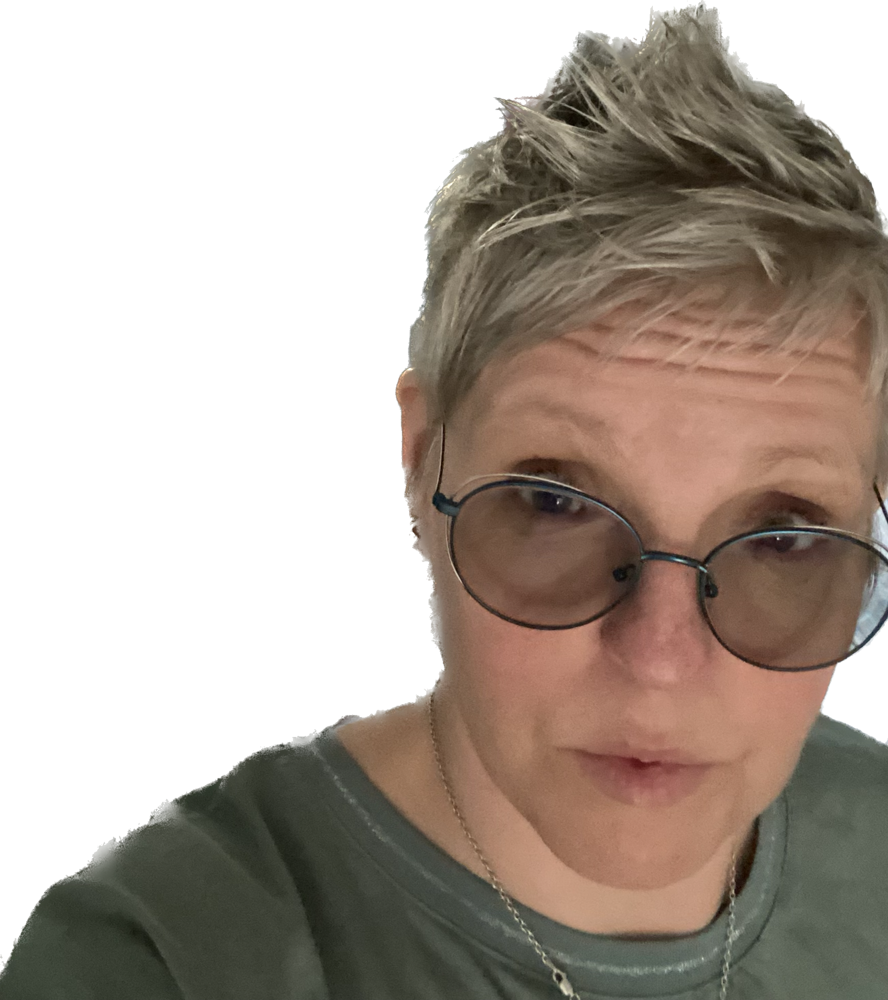

Etusivu | Harrastukset | Portfolio
Opintopolkuni on kulkenut lukion jälkeen varsin tyypillistä rataa. Ensin opiskelin lähihoitajaksi jatkaen viittomakielentulkiksi (AMK). Viittomakielentulkin töitä tein reilun vuosikymmenen. Kymmenkunta vuotta sitten siirryin nykyiselle työnantajalleni työkielen pysyessä samana.
Nykyisin työskentelen Kuurojen Liitossa palveluohjaajana. Opiskelin töiden ohessa ratkaisukeskeiseksi lyhytterapeutiksi. Terapiatyöni on suunnattu vittomakielisille. Mikäli viittomakieli herätti kiinnostuksesi, kannattaa tutustua aiheeseen Yle Kioskin opastamana. Siinä viittomakieliset kysyvät toisiltaan kysymyksiä, jotka yleisimmin vaivaavat kuulevien mieltä. Vahva katsomissuositus! Vajaassa vartissa opit enemmän kuin osaat odottaa.
Iltaisin ja viikonloppuisin käytin myös vuoden 2023 opiskellen Jyväskylän ammattikorkeakoulussa Digiosaajaksi. Koulutuksen sisältöä voit tarkastella täältä. Minulla ei ole suuria urahaaveita digitaalisen maailman osaamiseen liittyen, mutta olen aina viehättynyt tietotekniikasta, laitteiden ja ohjelmien käytettävyydestä. Työssäni saan opettaa ja ohjata digitaitoja. Teen ohjauksia myös vapaaehtoisena asuinalueellani. Digiosaajan koulutus lisää käyttäjätaitojen lisäksi myös ammattillista osaamista.
Työn ja opiskeluiden lisäksi ylläpidän kahden teini-ikäisen, yhden alakouluikäisen, aviomiehen, kissan ja neljän koiran kotitaloutta.
Koirat ovat perheemme yhteinen harrastus. Yhteistä taipaletta mieheni kanssa aloittaessamme otimme ensimmäiseksi koiraksemme kääpiösnautseri Maunon. Tämän jälkeen tulivat vielä Kyösti ja Martti. Mieheni innostuttua metsästyksestä koiramme ovat nykyään metsästyskoiria. Tällä hetkellä meillä on mäyräkoira Tarja, dreeveri Sauli sekä suomenajokoirat Lauri ja Jenni. Nokkelimmat sivuilleni eksyneet huomasivatkin jo tietyn kaavan koiriemme nimeämisissä, mutta varmuuden varmistamiseksi mainitsen vielä jo ikuisilla metsästysretkillään olevat suomenpystykorva Urhon sekä suomenajokoira Tellervon.